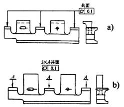
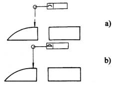
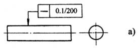
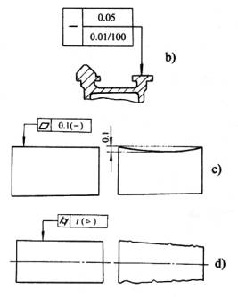
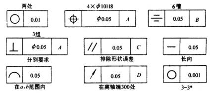
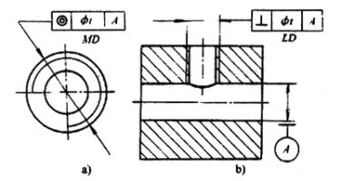
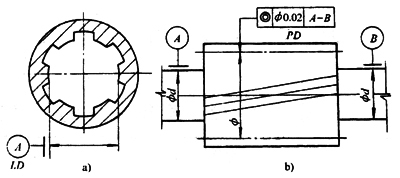

|
名称 |
标注规定 |
示例 |
|
公共公差带 |
1．图a是三个表面用同一公差带控制以达到共面要求的示例，应在公差表格上方标注“共面” 2．图b为同一要求的另一种标注形式，即公差框格不与被测要素相连。每一个被测要素上标以符号及字母，框格上方标上被测要素的数量及字母代号3xA，并在其后加注“共面” 3．除“共线”、“共面”要求外，其他要素需由公共公差带控制时，可加注“公共公差带” |
 |
|
全周符号 |
1．图a为外轮廓线的全周统一要求 2．图b为外轮廓面的全周统一要求 |
 |
|
对误差值的进一步限制 |
1．对同一棱滑要素，如在全长上给出公差值的同时，又要求在任一长度上进行进一步的限制，可同给出全长上和任意长度上两项要求，任一长度的公差值要求用分数表示，如a图所示 同时给出全长和任一长度上的公差值时，全长上的公差值框格并置于任一长度的公差值框格上面，如b图所示 2．对被测要素形状误差的变化方向有进一步限制要求时，应在公差值后加注限定符号。图c表示该平面的平面度误差只允许两边高中间低，即外边向中心凹下。图d表示该圆柱面的圆柱度误差只允许从左端向右端减小 |
  |
|
说明性内容 |
表示被测要素的数量，应注在框格的上方，其他说明性内容应注在框格的下方。但也允许例外的情况，如上方或下方没有位置标注时，可注在框格的周围或指引线上 |
 |
|
螺纹 |
一般情况下，以螺纹的中径轴线作为被测要素或基准要素时，不需另加说明 如需以螺纹大径或小径作为被测要素或基准要素时，应在框格下方或基准符号中的圆圈下方加注“MD”或“LD” |
 |
|
齿轮、花键 |
由齿轮和花键作为被测要素或基准要素时，其分度圆轴线用“PD”表示。大径(对外齿轮是顶圆直径，内齿轮是根圆直径)轴线用“MD”表示，小径（对外齿轮是根圆直径，内齿轮是顶圆直径）轴线用“LD”表示 |
 |